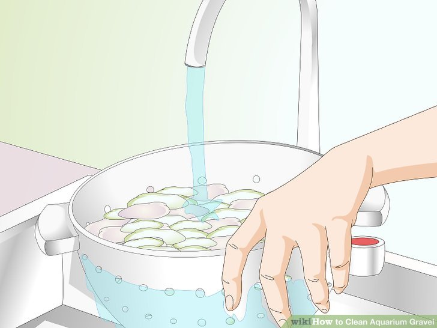
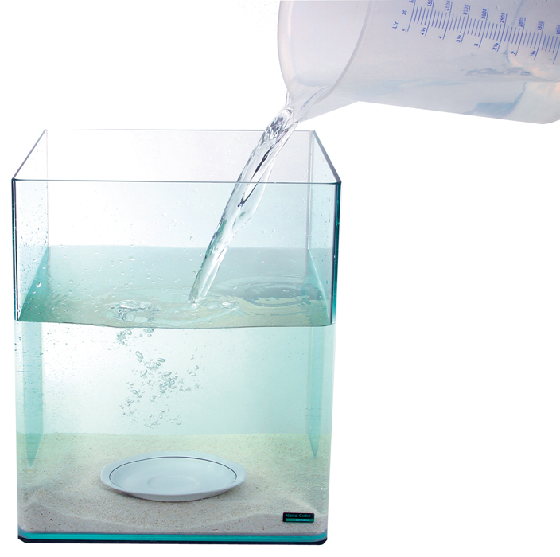
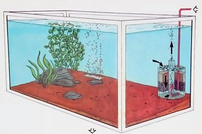
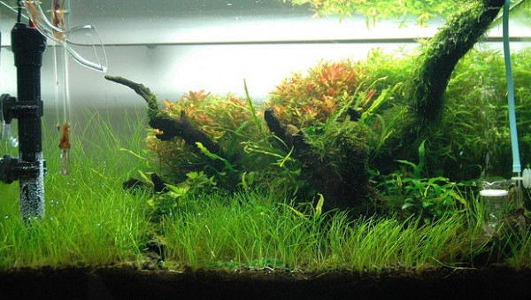
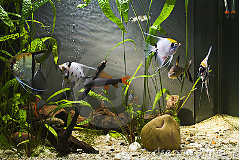

Do not use soap or detergents—they are highly toxic to fish. To wash the gravel, put it in a colander over a plastic pan or bucket and add water. Stir the gravel, drain, and repeat until the water stays clear and is free of debris.
Do not use any soap or detergents, these are highly toxic and can stay on aquarium decor for a long time. Even if it was thoroughly rinsed.
Use a bowl or cup and pour the water into that as to not disturb the gravel.
Add a water conditioner like Tetra or Aquasafe to de-chlorinate the water. If this is not possible leave the water in a uncovered bucket for 2-3 days, a gas exchange will occur on top of the bucket removing the chlorine. 
When aquascaping you must consider what fish you are getting, if you want a fish like a uaru cichlid you might not want to add plants to that aquarium because the uaru will rip up the plants and your tank is going to be a mess. Aquascape for the fish, don't set up a tank and buy a fish that might not even be suitable for the decor you used.
If you are using live plants make sure that the water is warm enough for them, make sure the roots are all below the gravel and leaving the crown exposed (if the plant has a crown).
Make sure to keep the plants moist and to use suitable lighting and a aquatic plant fertilizer for optimum root development.

Fill up the aquarium to the rim leaving a little air space between the water and the lid

If you are using any outside filter make sure to, fill them with the filler material or insert the filter cartridges, position them according to their instructions and make sure it is primed (filled) with water
A "hang on the back filter" with a pickup tube requires you to place the tube as close to the gravel (or whatever substrate you use) without actually being in the gravel. if the tube is too long you can cut it and reattach it to the intake cage. Be sure to open the lid and prime (fill) the filter with water.
It is important to cycle your tank, cycling will help grow helpful bacteria in the filter and remove toxins in the water. Make sure not to add too many fish if your tank is not properly cycled because this can result in a nitrate buildup that can kill your fish.
make sure your thermometer is not cracked and can be easily read. Only plug in your heater after it is fully submerged
Do not turn on your heater if it is not submerged in water, the heating element can malfunction and break, and the glass might shatter if placed in the water while hot. Make sure water is flowing properly through your filter. Adjust the settings on your air pump. Make sure the heater is the proper temperature , it will take 24 hours before the temperature in your aquarium stabilizes and you can add your fish.
